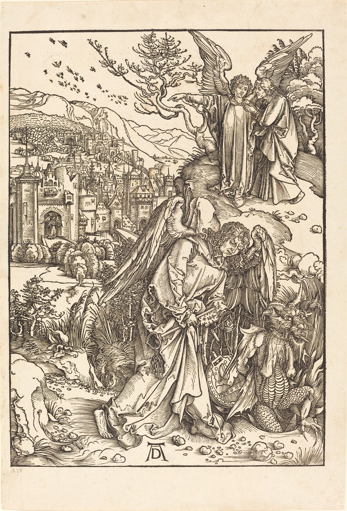

Revelation 20 — The Mister Translation

⚠ The last woodcut of Dürer’s Apocalypse joins two chapters: in the foreground the angel of verses 1–3, holding the key, shuts the dragon into the Abyss; above, an angel shows John the new Jerusalem of chapter 21, which lies spread out on the left with an angel at its gate.

Translator’s Notes
“And I saw an angel coming down out of heaven, having the key of the Abyss and a great chain in his hand.” The key of the Abyss was given to the fallen star of the fifth trumpet, who opened it (Revelation 9:1); now an angel holds it to shut it. The Abyss is where the demons at Gerasa begged not to be sent (Luke 8:31; dictionary). Of chained angels, Jude says God “has kept in eternal chains under gloom” those who left their dwelling (Jude 6). The KJV reads “the key of the bottomless pit”; the ASV reads “the key of the abyss and a great chain in his hand”; the NIV reads “the key to the Abyss.”
“And he seized the dragon — the ancient serpent, who is the Devil and Satan — and bound him for a thousand years.” The names are the four of Revelation 12:9, “the great dragon … the ancient serpent, the one called Devil and Satan,” and “the ancient serpent” looks back to the serpent of Eden (Genesis 3:1). The Greek leaves “the ancient serpent” in the form of a name, not fitted to the sentence, as the book does with God’s name at 1:4; the Byzantine text fits it, and adds from 12:9 “who deceives the whole inhabited earth.” “Bound” is deō, the verb of Jesus’ saying about plundering a strong man’s house: first one “ties up the strong man” (Mark 3:27). Chilia, “thousand,” stands in seven verses of the New Testament: six in a row here, 20:2–7, and “with the Lord one day is like a thousand years” (2 Peter 3:8). The KJV reads “that old serpent, which is the Devil, and Satan”; the NWT 1984 reads “the original serpent, who is the Devil and Satan”; the NIV reads “who is the devil, or Satan.”
“And threw him into the Abyss, and shut it and sealed it over him, so that he would not deceive the nations any longer until the thousand years were finished. After these things he must be released for a little time.” Isaiah says of the powers of heaven and the kings of the earth, “they shall be gathered as prisoners in a pit, and shut up in a prison, and after many days they shall be punished” (Isaiah 24:22). “Deceive” is the dragon’s own verb, “the deceiver of the whole inhabited earth” (12:9). “Must” is dei, the word of “what must happen soon” (1:1): even the release is part of the plan. “A little time” is the phrase the souls under the altar heard, “rest a little longer” (6:11). The ASV reads “and shut it, and sealed it over him”; the NWT 1984 reads “that he might not mislead the nations anymore”; the KJV reads “he must be loosed a little season.”
⚠ “And I saw thrones, and they sat on them, and judgment was given to them; and the souls of those who had been beheaded because of the testimony of Jesus and because of the word of God, and those who had not worshiped the beast or its image and had not received the mark on their forehead and on their hand. And they came to life and reigned with Christ a thousand years.” The scene is Daniel’s, where “thrones were placed” and “judgment was given to the holy ones of the Most High” (Daniel 7:9, 22); Jesus promised the Twelve they would “sit on twelve thrones” (Matthew 19:28), and Paul wrote that “the holy ones will judge the world” (1 Corinthians 6:2). The souls are those John saw under the altar, slain “because of the word of God and because of the testimony they had” (6:9); pepelekismenōn, “beheaded,” with the axe, stands only here. Whether those who refused the beast’s mark (13:16) are a second group or the same martyrs, readings differ. “Came to life” is ezēsan, the verb of Christ, “who was dead and came to life” (2:8), and of the beast that “yet lived” (13:14). The NWT 1984 reads “the souls of those executed with the ax for the witness they bore to Jesus and for speaking about God”; the KJV reads “and they lived and reigned with Christ a thousand years”; the NIV reads “They came to life and reigned with Christ a thousand years.”
⚠ “The rest of the dead did not come to life until the thousand years were finished. This is the first resurrection.” Readings of the thousand years differ, and these verses are the only passage in the Bible that names a reign of a thousand years. One reading takes them as a reign of Christ on earth after his return in chapter 19, before the last judgment; writers of the second century such as Justin and Irenaeus are reported to have held it (not checked here). Another takes them as the present age between Christ’s first coming and his return, with Satan bound as the strong man is tied up in Mark 3:27 and the “first resurrection” as the life of believers, or of the martyrs’ souls with Christ; Augustine is reported to have taught it (not checked here). A third expects a long age of the gospel’s spread before Christ returns. Some read “a thousand” as an exact number, others as ten times ten times ten, a whole. The text does not say where they reign: thrones in this book have stood in heaven (4:4), and the Lamb’s people “reign on the earth” (5:10). Anastasis, “resurrection,” stands in Revelation only here and in verse 6; the book names a first resurrection and a second death, never a second resurrection; John’s Gospel speaks of two, “a resurrection of life” and “a resurrection of judgment” (John 5:29). Tregelles and the Byzantine text begin “And the rest.” The KJV reads “But the rest of the dead lived not again”; the NWT 1984 puts the first sentence in parentheses, “(The rest of the dead did not come to life until the thousand years were ended.)”; the NIV does the same, “(The rest of the dead did not come to life until the thousand years were ended.)”
“Blessed and holy is the one who has a part in the first resurrection; over these the second death has no authority, but they will be priests of God and of Christ, and they will reign with him a thousand years.” This is the fifth of the seven “blessed” sayings of Revelation (19:9 was the fourth). “The second death” was promised to have no harm for the one who overcomes (2:11), and verse 14 will say what it is. “Priests … and they will reign” fulfills “he made us a kingdom, priests to his God” (1:6). Westcott-Hort, Tregelles and the Nestle-Aland text read “the thousand years”; the text printed here follows the Byzantine, without the article. The KJV reads “on such the second death hath no power”; the ASV reads “over these the second death hath no power”; the NWT 1984 reads “Happy and holy is anyone having part in the first resurrection.”
“And when the thousand years are finished, Satan will be released from his prison, and will come out to deceive the nations that are at the four corners of the earth, Gog and Magog, to gather them for the war; their number is like the sand of the sea.” “Prison” is phylakē, the word of “the devil is about to throw some of you into prison” (2:10); now he is in one. In Ezekiel, Gog is a ruler “of the land of Magog” who comes against Israel from the far north (Ezekiel 38:2, 15); here both names stand for the nations at the four corners of the earth (7:1). “The war” has the article again, as at 16:14 and 19:19, and some readers take the three as one battle told three times; others read them in sequence; readings differ. “Like the sand of the sea” is the measure of Abraham’s promise turned around, “like the sand that is on the shore of the sea” (Genesis 22:17). Tregelles and the Byzantine text read “Gog and the Magog.” The KJV reads “to gather them together to battle”; the ASV reads “to gather them together to the war”; the NWT 1984 reads “to mislead those nations in the four corners of the earth.”
“And they went up over the breadth of the earth and surrounded the camp of the holy ones and the beloved city; and fire came down out of heaven and devoured them.” “Camp” is parembolē, Israel’s camp in the wilderness, as in “let us go out to him outside the camp” (Hebrews 13:13); the holy ones are still a people on the march. “The beloved city” is not named. The fire is Elijah’s, “fire came down from the heavens and consumed him and his fifty” (2 Kings 1:10), the fire James and John wanted to call down (Luke 9:54), and Ezekiel’s against Gog, “fire and sulfur” (Ezekiel 38:22). As in chapter 19, the war ends before it begins. Tregelles adds “from God” before “out of heaven,” and the Byzantine text after it. The KJV reads “fire came down from God out of heaven, and devoured them”; the ASV reads “compassed the camp of the saints about, and the beloved city”; the NIV reads “surrounded the camp of God’s people, the city he loves.”
⚠ “And the Devil who was deceiving them was thrown into the lake of fire and sulfur, where the beast and the false prophet also are; and they will be tormented day and night forever and ever.” The lake is the one the beast and the false prophet were thrown into alive (19:20; dictionary), and Jesus spoke of “the eternal fire prepared for the devil and his angels” (Matthew 25:41). “Day and night forever and ever” is the language of 14:11, “they have no rest day or night.” Whether the torment is endless conscious suffering, or the book’s strongest picture of final destruction, readings differ, and this verse is central to that debate. The Greek has no verb in “where the beast and the false prophet also”; translations supply “are” or “were.” The KJV reads “where the beast and the false prophet are”; the NWT 1984 reads “where both the wild beast and the false prophet [already were]”; the NIV reads “where the beast and the false prophet had been thrown.”
“And I saw a great white throne and the one seated on it, from whose face the earth and the heaven fled, and no place was found for them.” The throne of chapter 4 returns, now white, the color of the conqueror’s horse and the victors’ robes. “No place was found for them” is the phrase said of the dragon and his angels thrown out of heaven (Revelation 12:8); the islands and mountains fled at 16:20, and in the next chapter “the first heaven and the first earth had gone away” (21:1). The editions differ only in how they write “on it”: Westcott-Hort, printed here, with one case, the Nestle-Aland and Byzantine texts with another, and Tregelles with “above it”; the sense is the same. The KJV reads “from whose face the earth and the heaven fled away; and there was found no place for them”; the NWT 1984 reads “From before him the earth and the heaven fled away”; the NIV reads “The earth and the heavens fled from his presence.”
“And I saw the dead, the great and the small, standing before the throne, and books were opened; and another book was opened, which is the book of life; and the dead were judged by the things written in the books, according to their works.” Daniel saw the same court, “the judgment sat, and the books were opened” (Daniel 7:10), and was told that “your people shall escape — everyone found written in the book” (Daniel 12:1). Moses asked to be blotted out of God’s book for his people (Exodus 32:32); the book of life was promised at 3:5 and named at 13:8 and 17:8, and Paul speaks of fellow workers “whose names are in the book of life” (Philippians 4:3). Two kinds of book are opened, the record of works and the book of life, and the chapter does not say how the two relate; readings differ. “According to their works” is Paul’s “who will render to each one according to his works” (Romans 2:6). The KJV reads “stand before God,” a reading none of the four editions prints; the ASV reads “the great and the small, standing before the throne”; the NWT 1984 reads “and scrolls were opened.”
“And the sea gave up the dead that were in it, and Death and Hades gave up the dead that were in them, and they were judged, each one according to their works.” Death and Hades rode out together at the fourth seal (Revelation 6:8), and Christ holds “the keys of Death and of Hades” (1:18). The sea gives up its dead before the sea itself is no more (21:1). Daniel saw the sleepers wake, “these to everlasting life, and these to reproaches” (Daniel 12:2), and Paul spoke of “a resurrection of both the righteous and the unrighteous” (Acts 24:15). The KJV reads “death and hell delivered up the dead which were in them”; the ASV reads “death and Hades gave up the dead that were in them”; the NWT 1984 reads “they were judged individually according to their deeds.”
⚠ “And Death and Hades were thrown into the lake of fire. This is the second death, the lake of fire. And if anyone was not found written in the book of life, he was thrown into the lake of fire.” Death itself is thrown away: “the last enemy to be abolished is death” (1 Corinthians 15:26), “Death is swallowed up in victory” (15:54), and in the next chapter “death will be no more” (21:4). “The second death” was named at 2:11 and verse 6, and will be named again at 21:8, “the lake that burns with fire and sulphur, which is the second death.” Where “hell” stands in older English here, the Greek is Hades, the realm of the dead, and it is thrown into the lake; readers draw different conclusions about what the lake is, and readings differ. Tregelles reads “the second death” in another order; the Byzantine text reads “scroll of life” with a different word. The KJV reads “And death and hell were cast into the lake of fire. This is the second death,” without “the lake of fire,” which all four editions print; the ASV reads “This is the second death, even the lake of fire”; the NWT 1984 reads “This means the second death, the lake of fire.”
Patterns worth carrying forward
What this chapter answers. The beast and the false prophet are gone (chapter 19); the dragon remains. This chapter disposes of him in two steps, bound in the Abyss for a thousand years while the martyrs reign with Christ, then released, defeated by fire from heaven and thrown into the lake where the other two are. Then every one of the dead stands before the great white throne, the books and the book of life are opened, and Death and Hades themselves are thrown into the lake. The way is cleared for the new heaven and the new earth.
Where this translation keeps the exact words: “the Abyss”; “the ancient serpent,” as at 12:9; “bound”; “a thousand years,” six times; “must”; “beheaded”; “came to life,” as at 2:8; “the first resurrection” and “the second death”; “prison,” as at 2:10; “Gog and Magog”; “the war,” with its article; “the camp of the holy ones”; “the beloved city”; “Death and Hades,” as at 1:18 and 6:8; and “the book of life.”
Echoes paid. The lake of fire of Revelation 19:20, where the beast and the false prophet already are, as promised at the close of Revelation 19; the key of the Abyss of Revelation 9:1; the dragon’s four names of Revelation 12:9; the souls under the altar of Revelation 6:9 and their “little time” of 6:11; the mark of Revelation 13:16; priests who reign, of Revelation 1:6 and 5:10; the second death of Revelation 2:11; the war of Revelation 16:14; “no place was found for them” of Revelation 12:8; the book of life of Revelation 3:5; and Death and Hades of Revelation 6:8.
Echoes planted. The new heaven and the new earth, where the first have gone away and the sea is no more; death, mourning, crying and pain no more; and the lake of fire named once more as the second death (Revelation 21:1, 21:4, 21:8).
Next in this book: Revelation 21, already on these pages. John sees a new heaven and a new earth, and the holy city, new Jerusalem, coming down out of heaven like a bride; the one on the throne says “Look — I am making all things new.”